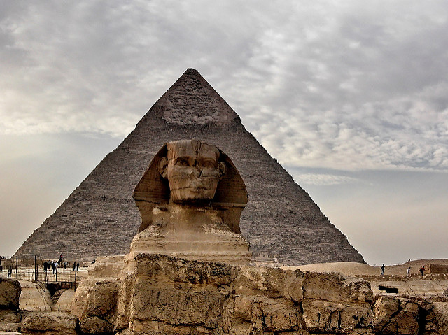
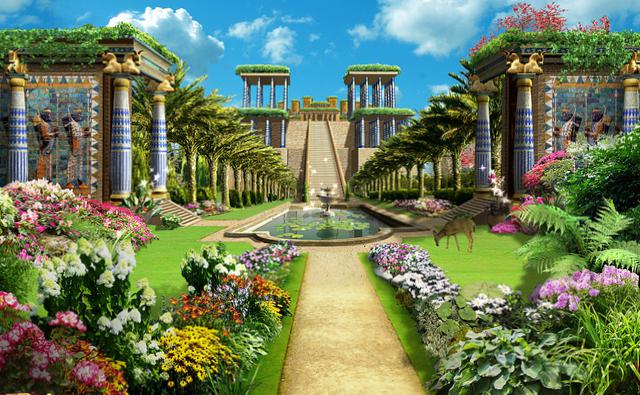
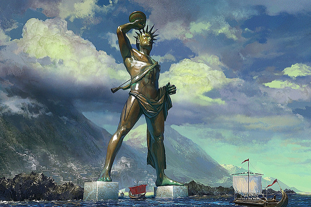
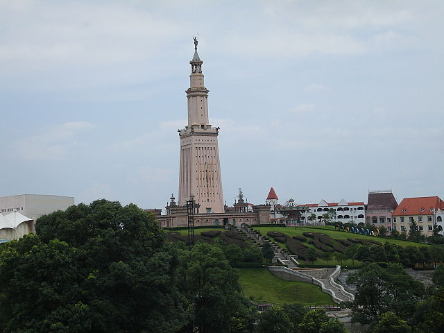
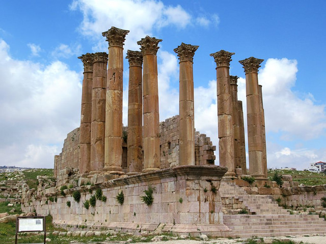
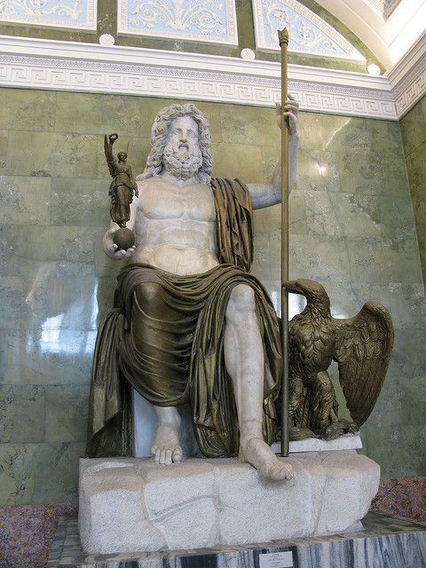

The seven ancient wonders of the world are known throughout history as the most extraordinary architectured symbols. They had a lasting effect in telling the history of mankind. Although mostly all of them do not stand as of the 21st Centruy. Here are the following orginal seven wonders of the world:
| Seven Wonders | Location |
|---|---|
| The Great Pyramid of Giza | Cario, Egpyt |
| Hanging Gardens of Babylon | Babylon, Iraq |
| Colossus of Rhodes | Rhodes, Greece |
| LightHouse of Alexandria | Alexandria, Egpyt |
| Temple of Artemis | Ephesus |
| Statue of Zeus | Olympia |
| Mausoleum at Halicarnassus | Halicarnassus |
The Pyramid of Giza built in 2560 BCE under the fourth dynasty of Pharaoh Kufu. The Great Pyramid was the tallest man made architecture before the making of the Eiffel Tower. The height of the Pyramid was mesured as 479 feet and the base as 754 feet, all constructed from blocks of stones. The Pyramid were royal tombs built for the pharaohs by skilled labourers. Hieroglyphics inside of the Pyramid help depict the lifestlye and creation of the Pryamid.
The Hanging Gardens of Babylon is one of the seven ancient wonders of the world that does not exist anymore. Although the accounts of many Greek Historians in 400 BC described it as a “wonder to the eyes”. The Garden was built under the King Nebuchadnezzar in order to cheer up his wife, Amyitis. The Garden rose on high artificial mountain risings with lots of greens, flowers and a water system that flowed up.
The Colossus of Rhodes built on the Islands of Rhodes which is known as modern day Greece. The statue was built in 292 BC under the Rhodians to commemorate their win against Demetrius I of Macedon. The Rhodians built the statue of Helios to show their hard-won freedom against the successor empire of Alexander the Great. The statue rose 33 meters high and is now known as the first statue of liberty.
The Lighthouse of Alexandria was built in the 300 BCE during the role of Ptolemy I. The lighthouse stood 100 meters tall being the second largest in the list after the Pyramid of Giza. The Lighthouse was created to serve as a guide for ships to navigate into Alexandria. The statue created by architect Sostratus of Cnidus. The statue was destroyed by two earthquakes.
The Temple of Artemis was built in the 6th century BCE at Ephesus which is modern day Turkey. The Temple was considered the largest Greek Temple compared to any of that time period. The dimensions of the temple were 129 meters long. The Temple honored the goddess of fertility, Artemis, and was designed by an architect Chersiphron. The Temple was destroyed by natural cause and then rebuilt and destroyed by a deliberate fire.
The Statue of Zeus at Olympia was built in 422 BC by a sculptor named Phidias. In the honor of Zeus, the king of Greek gods, the statue was placed in the Temple at Olympia where the Olympics games took place. The statue was 12 meters tall made of wooden frames and covered in ivory with gold panels.
The Temple of Olympian Zeus was built in 131 BC in Athens, Greece. The Temple took centuries to build but, was finally built under the Roman emperor Hadrian. The Temple was dedicated to the Zeus, the god of sky and thunder. The dimensions of the Temple were 110 m by 43 m.